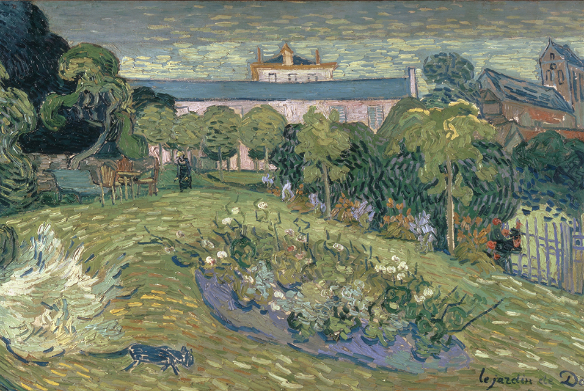

Między ziemią a niebem
Kunstmuseum Basel przygotowuje spektakularną wystawę, na której po raz pierwszy zostanie zaprezentowane wyłącznie malarstwo pejzażowe legendy europejskiej sztuki, Vincenta van Gogha.
70 zgromadzonych obrazów — wśród nich zarówno dzieła znane na całym świecie, jak i te rzadko pokazywane publiczności — pozwoli w nowy sposób spojrzeć na malarstwo van Gogha.
Uzupełnieniem ekspozycji będzie prezentacja 40 mistrzowskich kompozycji namalowanych przez jego współczesnych, pochodzących ze zbiorów bazylejskiego muzeum.
Dla publiczności przygotowano także prezentację multimedialną poświęconą życiu i dziełu holenderskiego malarza. Wystawa z pewnością stanie się jednym z ważniejszych europejskich wydarzeń artystycznych roku 2009.
Vincent van Gogh
Zwischen Erde und Himmel: Die Landschaften
Wystawa czynna od 26 kwietnia do 27 września 2009 roku.